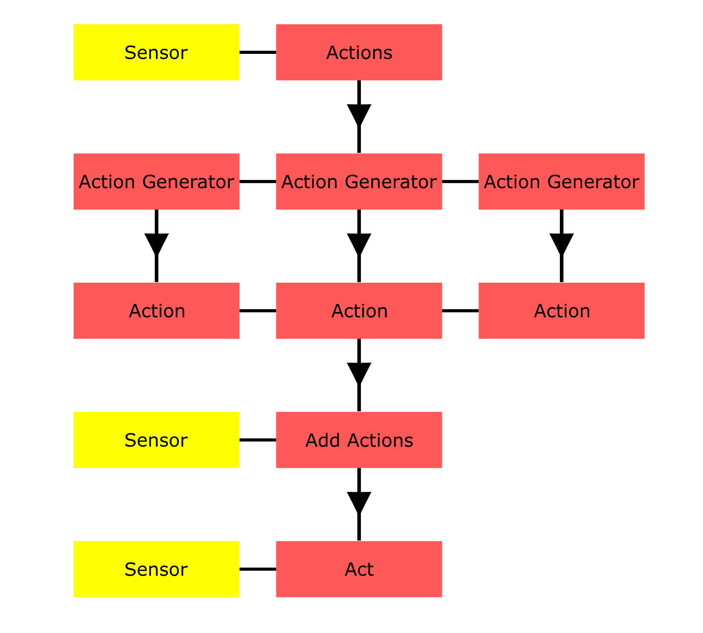

Note
Click here to download the full example code or to run this example in your browser via Binder
Creating an Actionable Sensor Example
This example demonstrates the process of creating an actionable sensor, i.e., a sensor that has an
actionable property. This includes creation of Action and ActionGenerator
that will handle how this property can evolves over time, and how to interface with the sensor via
given actions.
The Task
We will create a simple sensor with a field of view and infinite range. It lies on the 2D Cartesian plane and can look in 1 of 4 directions: East, North, West, South. Let’s call the attribute of the sensor that takes these values the direction, and model it such that it can instantaneously switch to a new value. We’ll define its field of view (FoV) as 90 degrees so that its observation of a particular direction leads to it being completely blind of the areas observable in the other 3 directions.
Action
The logic of this direction switching will be handled by our custom Action.
The class’ act method contains the calculations needed to take in the property’s current value
and return its new value after a particular amount of time has elapsed.
This class inherits 3 important properties:
* generator details which ActionGenerator the action was created by. This will be
discussed in detail later on.
* end_time specifies when the action should be completed by. For example, we might want the
sensor to switch from North to West in 5 seconds. So the end time would be 5 seconds from the
current time (the “current time” is a value stored by the sensor itself, and gets updated each
time it is called to action, which is a process discussed in detail later on). We will model the
action behaviour so that the direction does not change value until the end time is reached. I.E
we only switch to West exactly when 5 seconds have elapsed, and not before.
* target_value indicates what the new value of the property should be once the action is
complete (end time is reached).
from smartfusion.sensor.action import Action
class ChangeDirectionAction(Action):
"""Simply changes the direction that the sensor is looking in when the action `end_time` is
reached."""
def act(self, current_time, timestamp, init_value):
"""Only change to target direction once `end_time` is reached. Otherwise keep same value.
Parameters
----------
current_time: datetime.timedelta
Current time (stored by sensor)
timestamp: datetime.timedelta
Modification of direction ends at this time stamp
init_value: Any
Current value of the direction
Returns
-------
Any
The new value of the direction
"""
if timestamp >= self.end_time:
return self.target_value # target direction
else:
return init_value # same direction
It is within the Action where you can detail more complicated modifications to the
attribute. For example, the ChangeDwellAction is an action for use with the
dwell_centre property of the RadarRotatingBearingRange sensor (or any other model
with similar dwell dynamics). It contains the logic of calculating the angle turned by the dwell
centre in the given time delta, given a constant rpm.
Action Generator
Now that we have the logic of how the direction can change over time, we need to detail what
the potential changes can be for a given time frame. A ActionGenerator type handles
the details of these potential property values.
In the more complicated dwell centre example above, this might be in determining what potential
new bearings are achievable in 5 seconds given a specific rpm.
For our direction example, we have a simpler task of deciding which directions are achievable
given a particular time delta. As our “switch” is instantaneous, we clearly just yield an action
for every direction.
5 important properties are inherited from this class:
* owner specifies the sensor (or other Actionable) that the corresponding property
belongs to. I.E. which sensor we will be querying.
* attribute is the string-valued name of the property to be modified.
* start_time is the time at which the sensor is queried and end_time the time at which it is
queried to. E.g. “from now (9 o’clock), what can you do by 10 o’clock?”
* current_value details what the current value of the property is. In our case this would be
what the current direction the sensor is looking in is.
By inheriting this class, we are required to define several things: * the default_action property determines what the behaviour of the property should be, given no actions have been passed to it (or that it has no actions to perform at the given time). For our direction example, we’ll simply say that the direction won’t change. So the default action should be one of our ChangeDirectionAction types with a target value equal to the current value of the direction. For the dwell centre example discussed above, this might be reverting to a default, anti-clockwise rotation at the given rpm. The default action’s end-time should last until the end of the query (i.e. until end_time). * the __iter__ method defines how we calculate the potential actions for the sensor in the given time frame. We should be able to loop through this generator object and get out a ChangeDirectionAction for every potential new direction. * we should also define the __contains__ method for this generator. This way, for a given ChangeDirectionAction or particular direction, we can say whether this is possible by simply asking “is this IN my generator?”
from smartfusion.sensor.action import ActionGenerator
from smartfusion.base import Property
from smartfusion.sensor.sensor import Sensor
class DirectionActionsGenerator(ActionGenerator):
"""Return an action for each possible direction that the sensor can look at by `end_time`."""
owner: Sensor = Property(
doc="Sensor with `timestamp`, `direction` and `potential_directions` attributes")
@property
def default_action(self):
"""The default action is to remain "looking" in the same direction, so the `target_value`
is the same as the `current_value`."""
return ChangeDirectionAction(generator=self,
end_time=self.end_time,
target_value=self.current_value)
def __contains__(self, item):
"""Can switch to any direction in any time frame (as long as it is sensible. eg. we
shouldn't expect to be able to look in the direction "up" or "weast")."""
if isinstance(item, ChangeDirectionAction):
item = item.target_value # grab the target value of the action to check against
potential_directions = self.owner.potential_directions
return item in potential_directions # if its a potential direction, then it is possible
def __iter__(self):
"""
yield an action for every potential direction that is possible to look at in time frame.
"""
for direction in self.owner.potential_directions:
yield ChangeDirectionAction(generator=self,
end_time=self.end_time,
target_value=direction)
Actionable Sensor
All sensor models in SMART FUSION inherit from the Actionable type. This class handles
the logic needed for dealing with being actioned (i.e. receiving Action sets in some
manner and applying them to their corresponding properties).
To flag a particular property as something which should be actioned, simply define it as an
:class`~.ActionableProperty` and provide a ActionGenerator so that it is clear how it
should be modified over time.
An Actionable keeps track of its “schedule” via a dictionary, keyed by the actionable
properties’ names, where values are the most recent actions attributed to those properties. In
the instance where a key has corresponding value/action that has been completed, the act method
will handle the removal of this action from the schedule dictionary. An important point to take
here is that only a single action can be scheduled per property.
There are 3 important methods inherited by Actionable:
* actions will return a set of action generators (one for each actionable property of the
sensor). The method requires a timestamp to be passed in such that the generators have an end
time to calculate their possibilities for.
* add_actions takes a sequence of provided actions and adds them as values to their
corresponding actionable properties in the sensor’s schedule dictionary. This will overwrite any
pre-existing actions for those properties.
* act handles the actual calling to each of the scheduled actions for every actionable
property. A timestamp is required so that the sensor knows what time to act until. For every
actionable property the sensor has, this method calls the property’s corresponding scheduled
action, if it has one, up until the timestamp has been reached, and replaces the property’s value
with the new calculated one. The method also handles situations where the given timestamp
overruns the end time of scheduled actions, whereby it will revert to calling the property’s
corresponding generator’s default action for the rest of the time needed to reach the timestamp.
An Actionable type requires a method to validate_timestamp in order to keep track
of what it should consider as “now”. In the case of sensor types, this is done by
taking the sensor’s corresponding movement controller’s timestamp.
There will be some logic in calculating whether a target falls within the sensor’s FoV at a given
time, but the important point to take from this model is the creation of
ActionableProperty types for properties that you would like to be actionable.
In the instance where a sensor has no actionable properties, it simply is not affected by being
given a set of actions, nor will yield any action generators when queried, and won’t do anything
when called to act.
from numpy import pi
from smartfusion.sensor.sensor import Sensor
from smartfusion.sensor.actionable import ActionableProperty
from smartfusion.models.measurement.linear import LinearGaussian
from smartfusion.models.measurement.nonlinear import Cartesian2DToBearing
from smartfusion.types.detection import TrueDetection
from smartfusion.types.array import StateVector
class DirectedSensor(Sensor):
direction: str = ActionableProperty(doc="Direction that sensor is looking in",
generator_cls=DirectionActionsGenerator)
@property
def potential_directions(self):
return ["East", "North", "West", "South"]
@property
def potential_directions_angles(self):
"""Need a slightly more meaningful definition of direction when calculating what falls in
to the sensor's FoV."""
return {string: angle for string, angle
in zip(self.potential_directions, [.0, pi/2, pi, 3*pi/2])}
@property
def direction_angle(self):
return StateVector([0, 0, self.potential_directions_angles[self.direction]])
@property
def measurement_model(self):
return LinearGaussian(ndim_state=4,
mapping=(0, 2),
noise_covar=np.eye(2))
def measure(self, ground_truths, noise=None, **kwargs):
detections = set()
for truth in ground_truths:
bearing_calculator = Cartesian2DToBearing(ndim_state=4,
mapping=(0, 2),
noise_covar=None,
translation_offset=self.position,
rotation_offset=self.direction_angle)
bearing = bearing_calculator.function(truth, noise=False)
# Do not measure if state not in FoV (90 degrees)
if bearing > pi/4 or bearing < -pi/4:
continue
measurement_vector = self.measurement_model.function(truth, noise=False, **kwargs)
detection = TrueDetection(measurement_vector,
measurement_model=self.measurement_model,
timestamp=truth.timestamp,
groundtruth_path=truth)
detections.add(detection)
return detections
Data Flow
{kind=link}
Platform
To demonstrate the sensor in action, we will use a PlatformDetectionSimulator (the
sensor’s timestamp will also be attained from the platform’s movement controller).
We’ll start the sensor off by looking “North”, centred at the origin.
import datetime
from smartfusion.platform.base import FixedPlatform
from smartfusion.types.state import State
now = datetime.datetime.now()
sensor = DirectedSensor(direction="North") # sensor starts by looking "North"
# Need to fix sensor to platform for use in detection simulator
platform = FixedPlatform(position_mapping=(0, 2),
states=[State([0, 0, 0, 0], timestamp=now)],
sensors=[sensor])
Testing Methods
We can query what the sensor is capable of in the next 5 seconds with the following method:
five_sec_actions = DirectedSensor(direction="North").actions(now + datetime.timedelta(seconds=5))
five_sec_actions
{DirectionActionsGenerator(
owner=DirectedSensor(
direction=North,
resolutions=None,
rotation_offset=None,
mounting_offset=None,
movement_controller=None),
attribute=direction,
start_time=2022-09-26 17:25:38.006796,
end_time=2022-09-26 17:25:38.006796,
resolution=None)}
This method returns a set of ActionGenerator. As the sensor has one actionable
property (direction), a single DirectionActionsGenerator is returned.
The generator’s default action is to remain looking in the same direction (North):
generator = five_sec_actions.pop()
generator.default_action
ChangeDirectionAction(
end_time=2022-09-26 17:25:38.006796,
target_value=North,
generator=DirectionActionsGenerator(
owner=DirectedSensor(
direction=North,
resolutions=None,
rotation_offset=None,
mounting_offset=None,
movement_controller=None),
attribute=direction,
start_time=2022-09-26 17:25:38.006796,
end_time=2022-09-26 17:25:38.006796,
resolution=None))
Iterating through the generator yields all potential actions the sensor can take in 5 seconds:
for action in generator:
print(action)
ChangeDirectionAction(
end_time=2022-09-26 17:25:38.006796,
target_value=East,
generator=DirectionActionsGenerator(
owner=DirectedSensor(
direction=North,
resolutions=None,
rotation_offset=None,
mounting_offset=None,
movement_controller=None),
attribute=direction,
start_time=2022-09-26 17:25:38.006796,
end_time=2022-09-26 17:25:38.006796,
resolution=None))
ChangeDirectionAction(
end_time=2022-09-26 17:25:38.006796,
target_value=North,
generator=DirectionActionsGenerator(
owner=DirectedSensor(
direction=North,
resolutions=None,
rotation_offset=None,
mounting_offset=None,
movement_controller=None),
attribute=direction,
start_time=2022-09-26 17:25:38.006796,
end_time=2022-09-26 17:25:38.006796,
resolution=None))
ChangeDirectionAction(
end_time=2022-09-26 17:25:38.006796,
target_value=West,
generator=DirectionActionsGenerator(
owner=DirectedSensor(
direction=North,
resolutions=None,
rotation_offset=None,
mounting_offset=None,
movement_controller=None),
attribute=direction,
start_time=2022-09-26 17:25:38.006796,
end_time=2022-09-26 17:25:38.006796,
resolution=None))
ChangeDirectionAction(
end_time=2022-09-26 17:25:38.006796,
target_value=South,
generator=DirectionActionsGenerator(
owner=DirectedSensor(
direction=North,
resolutions=None,
rotation_offset=None,
mounting_offset=None,
movement_controller=None),
attribute=direction,
start_time=2022-09-26 17:25:38.006796,
end_time=2022-09-26 17:25:38.006796,
resolution=None))
We can schedule a particular action for the direction property simply by passing one of these actions to the add_actions method (returning True if the action is successfully scheduled):
sensor.add_actions({action})
True
{'direction': ChangeDirectionAction(
end_time=2022-09-26 17:25:38.006796,
target_value=South,
generator=DirectionActionsGenerator(
owner=DirectedSensor(
direction=North,
resolutions=None,
rotation_offset=None,
mounting_offset=None,
movement_controller=None),
attribute=direction,
start_time=2022-09-26 17:25:38.006796,
end_time=2022-09-26 17:25:38.006796,
resolution=None))}
If we now action the sensor for 2 seconds, the action we have scheduled for direction will be
called to act for 2 seconds and replace the direction with a new value. Since we programmed
the ChangeDirectionAction to not change anything until the end-time (5 seconds later)
is reached, we should not see any change in direction:
print("Timestamp at 0s: ", sensor.timestamp)
print("Direction at 0s: ", sensor.direction)
sensor.act(now + datetime.timedelta(seconds=2))
print("Timestamp at 2s: ", sensor.timestamp)
print("Direction at 2s: ", sensor.direction)
Timestamp at 0s: 2022-09-26 17:25:33.006796
Direction at 0s: North
Timestamp at 2s: 2022-09-26 17:25:35.006796
Direction at 2s: North
If we act until all 5 seconds have elapsed, we should see the sensor change to a new direction:
sensor.act(now + datetime.timedelta(seconds=5))
print("Timestamp at 5s: ", sensor.timestamp)
print("Direction at 5s: ", sensor.direction)
Timestamp at 5s: 2022-09-26 17:25:38.006796
Direction at 5s: South
Creating simulator
We’ll create a simple ground truth simulation on the 2D Cartesian plane, with a state space containing velocities. I.E. a state vector will be of the form \((x, \dot{x}, y, \dot{y})\).
The sensor starts the simulation by looking North. After 20 iterations of our simulation, we will query what is possible in 5 seconds. From the resultant generator, we will take the last potential action (which should be to look South), and schedule this. Then, after another 20 iterations, query what is possible in another 5 seconds, and take the action directing the sensor East (the first yielded action from the generator).
from smartfusion.models.transition.linear import ConstantVelocity, \
CombinedLinearGaussianTransitionModel
from smartfusion.types.state import GaussianState
import datetime
import numpy as np
from smartfusion.simulator.simple import MultiTargetGroundTruthSimulator
from smartfusion.simulator.platform import PlatformDetectionSimulator
transition_model = CombinedLinearGaussianTransitionModel([ConstantVelocity(0.1),
ConstantVelocity(0.1)])
now = datetime.datetime.now()
initial_state = GaussianState([0, 0, 0, 0], covar=np.diag([25, 1, 25, 1]), timestamp=now)
groundtruth_sim = MultiTargetGroundTruthSimulator(transition_model,
initial_state,
number_steps=100)
sensor = DirectedSensor(direction="North") # sensor starts by looking "North"
# Need to fix sensor to platform for use in detection simulator
platform = FixedPlatform(position_mapping=(0, 2),
states=[State([0, 0, 0, 0], timestamp=now)],
sensors=[sensor])
detector = PlatformDetectionSimulator(groundtruth_sim, {platform})
groundtruths = set()
all_detections = set()
for time_index, (time, detections) in enumerate(detector, 1):
if time_index == 20:
generator = sensor.actions(time + datetime.timedelta(seconds=5)).pop()
for action in generator: # loop through generator, get last action (South)
pass
sensor.add_actions({action})
elif time_index == 40:
generator = sensor.actions(time + datetime.timedelta(seconds=5)).pop()
action = next(iter(generator)) # get first action (East)
sensor.add_actions({action})
groundtruths.update(groundtruth_sim.current[1])
all_detections.update(detections)
print(f"num ground truths = {len(groundtruths)}, num detections = {len(all_detections)}")
num ground truths = 95, num detections = 242
import matplotlib.pyplot as plt
fig, ax = plt.subplots()
fig.suptitle("Detections of Directed Sensor", fontsize=16)
ax.figure.set_size_inches(20, 20)
# Plot sensor possible FoVs
for bearing in (pi/4, 3*pi/4, 5*pi/4, 7*pi/4):
ax.plot((0, 100*np.cos(bearing)), (0, 100*np.sin(bearing)), c="green")
# Plot sensor location
ax.scatter(0, 0, s=100, c="black")
# Plot ground truths
for truth in groundtruths:
ax.plot(*np.array([state.state_vector[(0, 2), :].flatten() for state in truth]).T, c="blue")
ax.figure.set_size_inches(20, 20)
# Plot detections
for detection in all_detections:
ax.scatter(*detection.state_vector, c="red", marker="*")
Total running time of the script: ( 0 minutes 0.549 seconds)